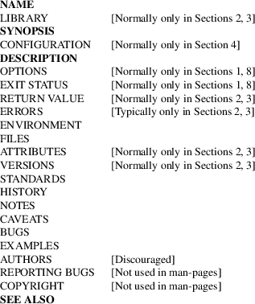
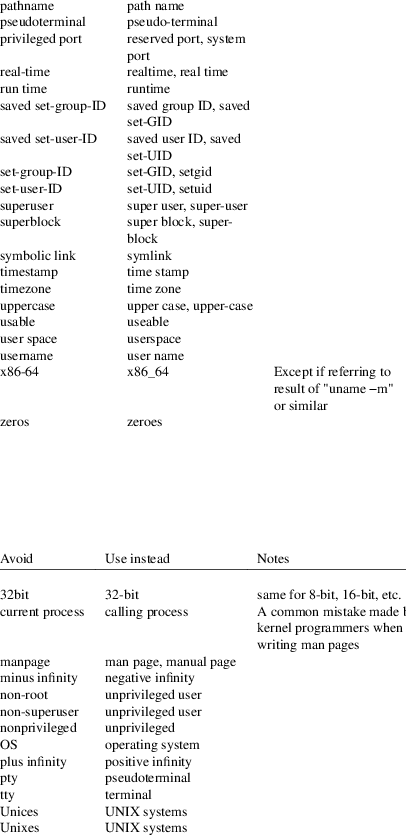
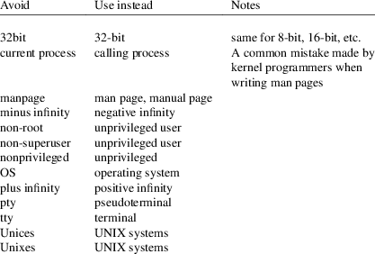
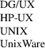
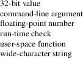
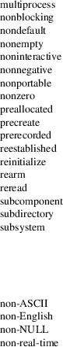
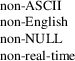

man-pages − conventions for writing Linux man pages
man [section] title
This page describes the conventions that should be employed when writing man pages for the Linux man-pages project, which documents the user-space API provided by the Linux kernel and the GNU C library. The project thus provides most of the pages in Section 2, many of the pages that appear in Sections 3, 4, and 7, and a few of the pages that appear in Sections 1, 5, and 8 of the man pages on a Linux system. The conventions described on this page may also be useful for authors writing man pages for other projects.
Sections of
the manual pages
The manual Sections are traditionally defined as follows:
1 User commands (Programs)
Commands that can be executed by the user from within a shell.
2 System calls
Functions which wrap operations performed by the kernel.
3 Library calls
All library functions excluding the system call wrappers (Most of the libc functions).
4 Special files (devices)
Files found in /dev which allow to access to devices through the kernel.
5 File formats and configuration files
Describes various human-readable file formats and configuration files.
6 Games
Games and funny little programs available on the system.
7 Overview, conventions, and miscellaneous
Overviews or descriptions of various topics, conventions, and protocols, character set standards, the standard filesystem layout, and miscellaneous other things.
8 System management commands
Commands like mount(8), many of which only root can execute.
Macro
package
New manual pages should be marked up using the groff
an.tmac package described in man(7). This choice
is mainly for consistency: the vast majority of existing
Linux manual pages are marked up using these macros.
Conventions
for source file layout
Please limit source code line length to no more than about
75 characters wherever possible. This helps avoid
line-wrapping in some mail clients when patches are
submitted inline.
Title
line
The first command in a man page should be a TH
command:
.TH title section date source manual-section
The arguments of the command are as follows:
|
title |
The title of the man page, written in all caps (e.g., MAN-PAGES). |
section
The section number in which the man page should be placed (e.g., 7).
|
date |
The date of the last nontrivial change that was made to the man page. (Within the man-pages project, the necessary updates to these timestamps are handled automatically by scripts, so there is no need to manually update them as part of a patch.) Dates should be written in the form YYYY-MM-DD. | ||
|
source |
The name and version of the project that provides the manual page (not necessarily the package that provides the functionality). |
manual-section
Normally, this should be empty, since the default value will be good.
Sections
within a manual page
The list below shows conventional or suggested sections.
Most manual pages should include at least the
highlighted sections. Arrange a new manual page so
that sections are placed in the order shown in the list.

Where a traditional heading would apply, please use it; this kind of consistency can make the information easier to understand. If you must, you can create your own headings if they make things easier to understand (this can be especially useful for pages in Sections 4 and 5). However, before doing this, consider whether you could use the traditional headings, with some subsections (.SS) within those sections.
The following list elaborates on the contents of each of the above sections.
|
NAME |
The name of this manual page. |
See man(7) for important details of the line(s) that should follow the .SH NAME command. All words in this line (including the word immediately following the "\−") should be in lowercase, except where English or technical terminological convention dictates otherwise.
LIBRARY
The library providing a symbol.
It shows the common name of the library, and in parentheses, the name of the library file and, if needed, the linker flag needed to link a program against it: (libfoo[, −lfoo]).
SYNOPSIS
A brief summary of the command or function’s interface.
For commands, this shows the syntax of the command and its arguments (including options); boldface is used for as-is text and italics are used to indicate replaceable arguments. Brackets ([]) surround optional arguments, vertical bars (|) separate choices, and ellipses (...) can be repeated. For functions, it shows any required data declarations or #include directives, followed by the function declaration.
Where a feature test macro must be defined in order to obtain the declaration of a function (or a variable) from a header file, then the SYNOPSIS should indicate this, as described in feature_test_macros(7).
CONFIGURATION
Configuration details for a device.
This section normally appears only in Section 4 pages.
DESCRIPTION
An explanation of what the program, function, or format does.
Discuss how it interacts with files and standard input, and what it produces on standard output or standard error. Omit internals and implementation details unless they’re critical for understanding the interface. Describe the usual case; for information on command-line options of a program use the OPTIONS section.
When describing new behavior or new flags for a system call or library function, be careful to note the kernel or C library version that introduced the change. The preferred method of noting this information for flags is as part of a .TP list, in the following form (here, for a new system call flag):
XYZ_FLAG (since Linux 3.7)
Description of flag...
Including version information is especially useful to users who are constrained to using older kernel or C library versions (which is typical in embedded systems, for example).
OPTIONS
A description of the command-line options accepted by a program and how they change its behavior.
This section should appear only for Section 1 and 8 manual pages.
EXIT STATUS
A list of the possible exit status values of a program and the conditions that cause these values to be returned.
This section should appear only for Section 1 and 8 manual pages.
RETURN VALUE
For Section 2 and 3 pages, this section gives a list of the values the library routine will return to the caller and the conditions that cause these values to be returned.
|
ERRORS |
For Section 2 and 3 manual pages, this is a list of the values that may be placed in errno in the event of an error, along with information about the cause of the errors. |
Where several different conditions produce the same error, the preferred approach is to create separate list entries (with duplicate error names) for each of the conditions. This makes the separate conditions clear, may make the list easier to read, and allows metainformation (e.g., kernel version number where the condition first became applicable) to be more easily marked for each condition.
The error list should be in alphabetical order.
ENVIRONMENT
A list of all environment variables that affect the program or function and how they affect it.
|
FILES |
A list of the files the program or function uses, such as configuration files, startup files, and files the program directly operates on. |
Give the full pathname of these files, and use the installation process to modify the directory part to match user preferences. For many programs, the default installation location is in /usr/local, so your base manual page should use /usr/local as the base.
ATTRIBUTES
A summary of various attributes of the function(s) documented on this page. See attributes(7) for further details.
VERSIONS
A summary of systems where the API performs differently, or where there’s a similar API.
STANDARDS
A description of any standards or conventions that relate to the function or command described by the manual page.
The preferred terms to use for the various standards are listed as headings in standards(7).
This section should note the current standards to which the API conforms to.
If the API is not governed by any standards but commonly exists on other systems, note them. If the call is Linux-specific or GNU-specific, note this. If it’s available in the BSDs, note that.
If this section consists of just a list of standards (which it commonly does), terminate the list with a period ('.').
HISTORY
A brief summary of the Linux kernel or glibc versions where a system call or library function appeared, or changed significantly in its operation.
As a general rule, every new interface should include a HISTORY section in its manual page. Unfortunately, many existing manual pages don’t include this information (since there was no policy to do so when they were written). Patches to remedy this are welcome, but, from the perspective of programmers writing new code, this information probably matters only in the case of kernel interfaces that have been added in Linux 2.4 or later (i.e., changes since Linux 2.2), and library functions that have been added to glibc since glibc 2.1 (i.e., changes since glibc 2.0).
The syscalls(2) manual page also provides information about kernel versions in which various system calls first appeared.
Old versions of standards should be mentioned here, rather than in STANDARDS, for example, SUS, SUSv2, and XPG, or the SVr4 and 4.xBSD implementation standards.
|
NOTES |
Miscellaneous notes. |
For Section 2 and 3 man pages you may find it useful to include subsections (SS) named Linux Notes and glibc Notes.
In Section 2, use the heading C library/kernel differences to mark off notes that describe the differences (if any) between the C library wrapper function for a system call and the raw system call interface provided by the kernel.
CAVEATS
Warnings about typical user misuse of an API, that don’t constitute an API bug or design defect.
|
BUGS |
A list of limitations, known defects or inconveniences, and other questionable activities. |
EXAMPLES
One or more examples demonstrating how this function, file, or command is used.
For details on writing example programs, see Example programs below.
AUTHORS
A list of authors of the documentation or program.
Use of an AUTHORS section is strongly discouraged. Generally, it is better not to clutter every page with a list of (over time potentially numerous) authors; if you write or significantly amend a page, add a copyright notice as a comment in the source file. If you are the author of a device driver and want to include an address for reporting bugs, place this under the BUGS section.
REPORTING BUGS
The man-pages project doesn’t use a REPORTING BUGS section in manual pages. Information on reporting bugs is instead supplied in the script-generated COLOPHON section. However, various projects do use a REPORTING BUGS section. It is recommended to place it near the foot of the page.
COPYRIGHT
The man-pages project doesn’t use a COPYRIGHT section in manual pages. Copyright information is instead maintained in the page source. In pages where this section is present, it is recommended to place it near the foot of the page, just above SEE ALSO.
SEE ALSO
A comma-separated list of related man pages, possibly followed by other related pages or documents.
The list should be ordered by section number and then alphabetically by name. Do not terminate this list with a period.
Where the SEE ALSO list contains many long manual page names, to improve the visual result of the output, it may be useful to employ the .ad l (don’t right justify) and .nh (don’t hyphenate) directives. Hyphenation of individual page names can be prevented by preceding words with the string "\%".
Given the distributed, autonomous nature of FOSS projects and their documentation, it is sometimes necessary—and in many cases desirable—that the SEE ALSO section includes references to manual pages provided by other projects.
The following subsections note some details for preferred formatting and wording conventions in various sections of the pages in the man-pages project.
SYNOPSIS
Wrap the function prototype(s) in a .nf/.fi
pair to prevent filling.
In general, where more than one function prototype is shown in the SYNOPSIS, the prototypes should not be separated by blank lines. However, blank lines (achieved using .PP) may be added in the following cases:
|
• |
to separate long lists of function prototypes into related groups (see for example list(3)); | ||
|
• |
in other cases that may improve readability. |
In the SYNOPSIS, a long function prototype may need to be continued over to the next line. The continuation line is indented according to the following rules:
|
(1) |
If there is a single such prototype that needs to be continued, then align the continuation line so that when the page is rendered on a fixed-width font device (e.g., on an xterm) the continuation line starts just below the start of the argument list in the line above. (Exception: the indentation may be adjusted if necessary to prevent a very long continuation line or a further continuation line where the function prototype is very long.) As an example: |
int
tcsetattr(int fd, int
optional_actions,
const struct termios *termios_p);
|
(2) |
But, where multiple functions in the SYNOPSIS require continuation lines, and the function names have different lengths, then align all continuation lines to start in the same column. This provides a nicer rendering in PDF output (because the SYNOPSIS uses a variable width font where spaces render narrower than most characters). As an example: |
int
getopt(int argc, char * const
argv[],
const char *optstring);
int getopt_long(int argc, char * const
argv[],
const char *optstring,
const struct option *longopts, int
*longindex);
RETURN
VALUE
The preferred wording to describe how errno is set is
"errno is set to indicate the error" or
similar. This wording is consistent with the wording used in
both POSIX.1 and FreeBSD.
ATTRIBUTES
Note the following:
|
• |
Wrap the table in this section in a .ad l/.ad pair to disable text filling and a .nh/.hy pair to disable hyphenation. | ||
|
• |
Ensure that the table occupies the full page width through the use of an lbx description for one of the columns (usually the first column, though in some cases the last column if it contains a lot of text). | ||
|
• |
Make free use of T{/T} macro pairs to allow table cells to be broken over multiple lines (also bearing in mind that pages may sometimes be rendered to a width of less than 80 columns). |
For examples of all of the above, see the source code of various pages.
The following subsections describe the preferred style for the man-pages project. For details not covered below, the Chicago Manual of Style is usually a good source; try also grepping for preexisting usage in the project source tree.
Use of
gender-neutral language
As far as possible, use gender-neutral language in the text
of man pages. Use of "they" ("them",
"themself", "their") as a gender-neutral
singular pronoun is acceptable.
Formatting
conventions for manual pages describing commands
For manual pages that describe a command (typically in
Sections 1 and 8), the arguments are always specified using
italics, even in the SYNOPSIS section.
The name of the command, and its options, should always be formatted in bold.
Formatting
conventions for manual pages describing functions
For manual pages that describe functions (typically in
Sections 2 and 3), the arguments are always specified using
italics, even in the SYNOPSIS section, where the rest
of the function is specified in bold:
int myfunction(int argc, char **argv);
Variable names should, like argument names, be specified in italics.
Any reference to the subject of the current manual page should be written with the name in bold followed by a pair of parentheses in Roman (normal) font. For example, in the fcntl(2) man page, references to the subject of the page would be written as: fcntl(). The preferred way to write this in the source file is:
.BR fcntl ()
(Using this format, rather than the use of "\fB...\fP()" makes it easier to write tools that parse man page source files.)
Use semantic
newlines
In the source of a manual page, new sentences should be
started on new lines, long sentences should be split into
lines at clause breaks (commas, semicolons, colons, and so
on), and long clauses should be split at phrase boundaries.
This convention, sometimes known as "semantic
newlines", makes it easier to see the effect of
patches, which often operate at the level of individual
sentences, clauses, or phrases.
Lists
There are different kinds of lists:
Tagged paragraphs
These are used for a list of tags and their descriptions. When the tags are constants (either macros or numbers) they are in bold. Use the .TP macro.
An example is this "Tagged paragraphs" subsection is itself.
Ordered lists
Elements are preceded by a number in parentheses (1), (2). These represent a set of steps that have an order.
When there are substeps, they will be numbered like (4.2).
Positional lists
Elements are preceded by a number (index) in square brackets [4], [5]. These represent fields in a set. The first index will be:
|
0 |
When it represents fields of a C data structure, to be consistent with arrays. | ||
|
1 |
When it represents fields of a file, to be consistent with tools like cut(1). |
Alternatives list
Elements are preceded by a letter in parentheses (a), (b). These represent a set of (normally) exclusive alternatives.
Bullet lists
Elements are preceded by bullet symbols (\[bu]). Anything that doesn’t fit elsewhere is usually covered by this type of list.
Numbered notes
Not really a list, but the syntax is identical to "positional lists".
There should always be exactly 2 spaces between the list symbol and the elements. This doesn’t apply to "tagged paragraphs", which use the default indentation rules.
Formatting
conventions (general)
Paragraphs should be separated by suitable markers (usually
either .PP or .IP). Do not separate
paragraphs using blank lines, as this results in poor
rendering in some output formats (such as PostScript and
PDF).
Filenames (whether pathnames, or references to header files) are always in italics (e.g., <stdio.h>), except in the SYNOPSIS section, where included files are in bold (e.g., #include <stdio.h>). When referring to a standard header file include, specify the header file surrounded by angle brackets, in the usual C way (e.g., <stdio.h>).
Special macros, which are usually in uppercase, are in bold (e.g., MAXINT). Exception: don’t boldface NULL.
When enumerating a list of error codes, the codes are in bold (this list usually uses the .TP macro).
Complete commands should, if long, be written as an indented line on their own, with a blank line before and after the command, for example
man 7 man−pages
If the command is short, then it can be included inline in the text, in italic format, for example, man 7 man-pages. In this case, it may be worth using nonbreaking spaces (\[ti]) at suitable places in the command. Command options should be written in italics (e.g., −l).
Expressions, if not written on a separate indented line, should be specified in italics. Again, the use of nonbreaking spaces may be appropriate if the expression is inlined with normal text.
When showing example shell sessions, user input should be formatted in bold, for example
$ date
Thu Jul 7 13:01:27 CEST 2016
Any reference to another man page should be written with the name in bold, always followed by the section number, formatted in Roman (normal) font, without any separating spaces (e.g., intro(2)). The preferred way to write this in the source file is:
.BR intro (2)
(Including the section number in cross references lets tools like man2html(1) create properly hyperlinked pages.)
Control characters should be written in bold face, with no quotes; for example, ^X.
Spelling
Starting with release 2.59, man-pages follows
American spelling conventions (previously, there was a
random mix of British and American spellings); please write
all new pages and patches according to these
conventions.
Aside from the well-known spelling differences, there are a few other subtleties to watch for:
|
• |
American English tends to use the forms "backward", "upward", "toward", and so on rather than the British forms "backwards", "upwards", "towards", and so on. | ||
|
• |
Opinions are divided on "acknowledgement" vs "acknowledgment". The latter is predominant, but not universal usage in American English. POSIX and the BSD license use the former spelling. In the Linux man-pages project, we use "acknowledgement". |
BSD version
numbers
The classical scheme for writing BSD version numbers is
x.yBSD, where x.y is the version number (e.g.,
4.2BSD). Avoid forms such as BSD 4.3.
Capitalization
In subsection ("SS") headings, capitalize the
first word in the heading, but otherwise use lowercase,
except where English usage (e.g., proper nouns) or
programming language requirements (e.g., identifier names)
dictate otherwise. For example:
.SS Unicode under Linux
Indentation
of structure definitions, shell session logs, and so on
When structure definitions, shell session logs, and so on
are included in running text, indent them by 4 spaces (i.e.,
a block enclosed by .in +4n and .in),
format them using the .EX and .EE macros, and
surround them with suitable paragraph markers (either
.PP or .IP). For example:
.PP
.in +4n
.EX
int
main(int argc, char *argv[])
{
return 0;
}
.EE
.in
.PP
Preferred
terms
The following table lists some preferred terms to use in man
pages, mainly to ensure consistency across pages.

See also the discussion Hyphenation of attributive compounds below.
Terms to
avoid
The following table lists some terms to avoid using in man
pages, along with some suggested alternatives, mainly to
ensure consistency across pages.

Trademarks
Use the correct spelling and case for trademarks. The
following is a list of the correct spellings of various
relevant trademarks that are sometimes misspelled:

NULL, NUL,
null pointer, and null byte
A null pointer is a pointer that points to nothing,
and is normally indicated by the constant NULL. On
the other hand, NUL is the null byte, a byte
with the value 0, represented in C via the character
constant '\0'.
The preferred term for the pointer is "null pointer" or simply "NULL"; avoid writing "NULL pointer".
The preferred term for the byte is "null byte". Avoid writing "NUL", since it is too easily confused with "NULL". Avoid also the terms "zero byte" and "null character". The byte that terminates a C string should be described as "the terminating null byte"; strings may be described as "null-terminated", but avoid the use of "NUL-terminated".
Hyperlinks
For hyperlinks, use the .UR/.UE macro pair
(see groff_man(7)). This produces proper hyperlinks
that can be used in a web browser, when rendering a page
with, say:
BROWSER=firefox man -H pagename
Use of e.g.,
i.e., etc., a.k.a., and similar
In general, the use of abbreviations such as
"e.g.", "i.e.", "etc.",
"cf.", and "a.k.a." should be avoided,
in favor of suitable full wordings ("for example",
"that is", "and so on", "compare
to", "also known as").
The only place where such abbreviations may be acceptable is in short parenthetical asides (e.g., like this one).
Always include periods in such abbreviations, as shown here. In addition, "e.g." and "i.e." should always be followed by a comma.
Em-dashes
The way to write an em-dash—the glyph that appears at
either end of this subphrase—in *roff is with the
macro "\[em]". (On an ASCII terminal, an em-dash
typically renders as two hyphens, but in other typographical
contexts it renders as a long dash.) Em-dashes should be
written without surrounding spaces.
Hyphenation
of attributive compounds
Compound terms should be hyphenated when used attributively
(i.e., to qualify a following noun). Some examples:

Hyphenation
with multi, non, pre, re, sub, and so on
The general tendency in modern English is not to hyphenate
after prefixes such as "multi", "non",
"pre", "re", "sub", and so on.
Manual pages should generally follow this rule when these
prefixes are used in natural English constructions with
simple suffixes. The following list gives some examples of
the preferred forms:

Hyphens should be retained when the prefixes are used in nonstandard English words, with trademarks, proper nouns, acronyms, or compound terms. Some examples:

Finally, note that "re-create" and "recreate" are two different verbs, and the former is probably what you want.
Generating
optimal glyphs
Where a real minus character is required (e.g., for numbers
such as −1, for man page cross references such as
utf−8(7), or when writing options that have a
leading dash, such as in ls −l), use the
following form in the man page source:
\−
This guideline applies also to code examples.
The use of real minus signs serves the following purposes:
|
• |
To provide better renderings on various targets other than ASCII terminals, notably in PDF and on Unicode/UTF−8-capable terminals. | ||
|
• |
To generate glyphs that when copied from rendered pages will produce real minus signs when pasted into a terminal. |
To produce unslanted single quotes that render well in ASCII, UTF-8, and PDF, use "\[aq]" ("apostrophe quote"); for example
\[aq]C\[aq]
where C is the quoted character. This guideline applies also to character constants used in code examples.
Where a proper caret (^) that renders well in both a terminal and PDF is required, use "\[ha]". This is especially necessary in code samples, to get a nicely rendered caret when rendering to PDF.
Using a naked "~" character results in a poor rendering in PDF. Instead use "\[ti]". This is especially necessary in code samples, to get a nicely rendered tilde when rendering to PDF.
Example
programs and shell sessions
Manual pages may include example programs demonstrating how
to use a system call or library function. However, note the
following:
|
• |
Example programs should be written in C. | ||
|
• |
An example program is necessary and useful only if it demonstrates something beyond what can easily be provided in a textual description of the interface. An example program that does nothing other than call an interface usually serves little purpose. | ||
|
• |
Example programs should ideally be short (e.g., a good example can often be provided in less than 100 lines of code), though in some cases longer programs may be necessary to properly illustrate the use of an API. | ||
|
• |
Expressive code is appreciated. | ||
|
• |
Comments should included where helpful. Complete sentences in free-standing comments should be terminated by a period. Periods should generally be omitted in "tag" comments (i.e., comments that are placed on the same line of code); such comments are in any case typically brief phrases rather than complete sentences. | ||
|
• |
Example programs should do error checking after system calls and library function calls. | ||
|
• |
Example programs should be complete, and compile without warnings when compiled with cc −Wall. | ||
|
• |
Where possible and appropriate, example programs should allow experimentation, by varying their behavior based on inputs (ideally from command-line arguments, or alternatively, via input read by the program). | ||
|
• |
Example programs should be laid out according to Kernighan and Ritchie style, with 4-space indents. (Avoid the use of TAB characters in source code!) The following command can be used to format your source code to something close to the preferred style: |
indent −npro −kr −i4 −ts4 −sob −l72 −ss −nut −psl prog.c
|
• |
For consistency, all example programs should terminate using either of: |
exit(EXIT_SUCCESS);
exit(EXIT_FAILURE);
Avoid using the following forms to terminate a program:
exit(0);
exit(1);
return n;
|
• |
If there is extensive explanatory text before the program source code, mark off the source code with a subsection heading Program source, as in: |
.SS Program source
Always do this if the explanatory text includes a shell session log.
If you include a shell session log demonstrating the use of a program or other system feature:
|
• |
Place the session log above the source code listing. | ||
|
• |
Indent the session log by four spaces. | ||
|
• |
Boldface the user input text, to distinguish it from output produced by the system. |
For some examples of what example programs should look like, see wait(2) and pipe(2).
For canonical examples of how man pages in the man-pages package should look, see pipe(2) and fcntl(2).
man(1), man2html(1), attributes(7), groff(7), groff_man(7), man(7), mdoc(7)